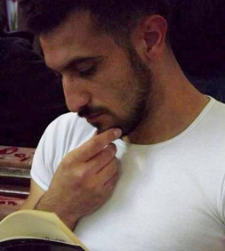

НА ПРОСТОМ ЯЗЫКЕ:
ЕВРОСОЮЗ НАМ НУЖЕН
Эту маленькую статью про интеграцию Грузии в Евросоюз и НАТО я пишу как простой гражданин Грузии, как молодой представитель азербайджанского этнического меньшинства Грузии и, конечно же, как директор медицинской компании, действующей в сфере среднего грузинского бизнеса. Хочу выразить свое мнение без терминов, на простом языке.
Итак, почему мы должны стремиться к Евросоюзу и НАТО, какие выгоды нашей стране и обществу, гражданам от этого пути интеграции, какие плюсы есть в ценностях этого союза, какие экономические и политические преимущества можно ожидать? На эти вопросы я постараюсь найти простые ответы.
В политическом смысле Европейский союз дает нам возможность приобщения к ценностям. Интеграция в Евросоюз, дает нам возможность осознанать и воспринять демократические ценности, дает нам возможность стать частью европейской политической культуры. У нас в Грузии, особенно в провинциях, очень низок уровень политической активности граждан, иными словами, низок уровень гражданской ответственности. Пользуясь поддержкой властных структур, сельские и даже районные директора школ и остальной персонал учебных заведений, стараются вмешиваться в процесс выборов, и, пользуясь своим авторитетом, влиять на выбор людей и, тем самым, на весь избирательный процесс.
По моему, интегрируясь в Евросоюз, мы сможем обеспечить качественное образование для своих граждан, и это поднимет общий уровень образованности и приведет к осознанию гражданами своей гражданской ответственности, приведет к той политической культуре, которая свойственна странам Евросоюза. Нам не нужны авторитарные сельсоветы, районные перфекты, региональные губернаторы и, наконец, президенты страны. Нам нужна система, в которой все - и исполнительная, и законодательная, и судебная ветви власти будут действовать исключительно под верховенством закона, устанавливая тем самым порядок зависимости личности от системы, а не наоборот. В экономическом смысле Евросоюз нам нужен по следующим причинам.
1) Грузия представляет собой 4.5 миллионный рынок для Евросоюза, что, естественно, немного для такой большой организации, в то время как Евросоюз со своим 450 миллионным рынком представляет очень большие возможности для нашей маленькой Грузии;
2) В Евросоюзе в некоторых странах высокий уровень налогов и бюрократические препоны, и поэтому многие бизнесмены ищут страны, в которых нет таких проблем, и, плюс к этому, есть возможность обеспечить для компании рабочую силу по приемлемой цене, но, учитывая стандарты таможенной системы Евросоюза, бизнесмены больше предпочитают работать внутри Евросоюза, и на будущее Грузия может стать именно такой страной - для потока инвестиций от европейских компаний и для компаний других стран, которые ориентированы на европейский рынок;
3) Грузия может присутствовать в европейском рынке как страна, которая может показать высокий уровень аграрно-промышленного комплекса. Грузия уже производит биопродукты (органические продукты), но для выращивания экологически чистых фруктов и овощей необходимо сперва очистить землю от пестицидов и других химикатов, и в связи с этим Евросоюз может оказать помощь и финансовом плане, и в плане обучения.
Можно привести еще больше разных аргументов в пользу экономического союза с ЕС, однако все это приобретет смысл только в том случае, если в Грузии будет человеческий ресурс, обеспечивающий конкурентоспособность ее товаров на европейском рынке.
Поэтому самая важная польза от интеграции в ЕС для Грузии, на мой взгляд - это доступ к качественному образованию. Образование очень важно для развития нашего общества, оно может создать профессионалов на нужных местах для развития культуры, науки, искусства, просвещение расширит знания каждого гражданина, и приведет к избавлению от стереотипов и предубеждений, приведет к появлению толерантной культуры, и как следствие, уменьшатся конфликты, возникающие на этнической, религиозной и других почвах. Качественное образование - это основной источник демократизации и развития гражданского общества, и, конечно же, основа для создания правового государства.
В мире нет другой аналогичной системы, которая предоставляла бы настолько высокий уровень защиты и уважения прав этнических меньшинств, как в Европе. Мы, азербайджанцы Грузии, верим и поддерживаем стремление нашей страны стать частью Европейской семьи демократических государств.
Аргументом служит и тот факт, что Грузия, уже будучи в составе Европейского союза, станет привлекательной для людей, живущих в оккупированных регионах, и интеграция в ЕС даст народу Грузии почву для примирения.
В заверешение хочу сказать, что для стабильного и долгосрочного развития нам нужна мощная и обладающая рычагами принуждения организация - НАТО. Оба процесса интеграции Грузии - в Евросоюз и в НАТО - неразделимы и взаимодополняют друг друга.
Элвин Бунтурк (Амрахов)
19-11-14
Итак, почему мы должны стремиться к Евросоюзу и НАТО, какие выгоды нашей стране и обществу, гражданам от этого пути интеграции, какие плюсы есть в ценностях этого союза, какие экономические и политические преимущества можно ожидать? На эти вопросы я постараюсь найти простые ответы.
В политическом смысле Европейский союз дает нам возможность приобщения к ценностям. Интеграция в Евросоюз, дает нам возможность осознанать и воспринять демократические ценности, дает нам возможность стать частью европейской политической культуры. У нас в Грузии, особенно в провинциях, очень низок уровень политической активности граждан, иными словами, низок уровень гражданской ответственности. Пользуясь поддержкой властных структур, сельские и даже районные директора школ и остальной персонал учебных заведений, стараются вмешиваться в процесс выборов, и, пользуясь своим авторитетом, влиять на выбор людей и, тем самым, на весь избирательный процесс.
По моему, интегрируясь в Евросоюз, мы сможем обеспечить качественное образование для своих граждан, и это поднимет общий уровень образованности и приведет к осознанию гражданами своей гражданской ответственности, приведет к той политической культуре, которая свойственна странам Евросоюза. Нам не нужны авторитарные сельсоветы, районные перфекты, региональные губернаторы и, наконец, президенты страны. Нам нужна система, в которой все - и исполнительная, и законодательная, и судебная ветви власти будут действовать исключительно под верховенством закона, устанавливая тем самым порядок зависимости личности от системы, а не наоборот. В экономическом смысле Евросоюз нам нужен по следующим причинам.
1) Грузия представляет собой 4.5 миллионный рынок для Евросоюза, что, естественно, немного для такой большой организации, в то время как Евросоюз со своим 450 миллионным рынком представляет очень большие возможности для нашей маленькой Грузии;
2) В Евросоюзе в некоторых странах высокий уровень налогов и бюрократические препоны, и поэтому многие бизнесмены ищут страны, в которых нет таких проблем, и, плюс к этому, есть возможность обеспечить для компании рабочую силу по приемлемой цене, но, учитывая стандарты таможенной системы Евросоюза, бизнесмены больше предпочитают работать внутри Евросоюза, и на будущее Грузия может стать именно такой страной - для потока инвестиций от европейских компаний и для компаний других стран, которые ориентированы на европейский рынок;
3) Грузия может присутствовать в европейском рынке как страна, которая может показать высокий уровень аграрно-промышленного комплекса. Грузия уже производит биопродукты (органические продукты), но для выращивания экологически чистых фруктов и овощей необходимо сперва очистить землю от пестицидов и других химикатов, и в связи с этим Евросоюз может оказать помощь и финансовом плане, и в плане обучения.
Можно привести еще больше разных аргументов в пользу экономического союза с ЕС, однако все это приобретет смысл только в том случае, если в Грузии будет человеческий ресурс, обеспечивающий конкурентоспособность ее товаров на европейском рынке.
Поэтому самая важная польза от интеграции в ЕС для Грузии, на мой взгляд - это доступ к качественному образованию. Образование очень важно для развития нашего общества, оно может создать профессионалов на нужных местах для развития культуры, науки, искусства, просвещение расширит знания каждого гражданина, и приведет к избавлению от стереотипов и предубеждений, приведет к появлению толерантной культуры, и как следствие, уменьшатся конфликты, возникающие на этнической, религиозной и других почвах. Качественное образование - это основной источник демократизации и развития гражданского общества, и, конечно же, основа для создания правового государства.
В мире нет другой аналогичной системы, которая предоставляла бы настолько высокий уровень защиты и уважения прав этнических меньшинств, как в Европе. Мы, азербайджанцы Грузии, верим и поддерживаем стремление нашей страны стать частью Европейской семьи демократических государств.
Аргументом служит и тот факт, что Грузия, уже будучи в составе Европейского союза, станет привлекательной для людей, живущих в оккупированных регионах, и интеграция в ЕС даст народу Грузии почву для примирения.
В заверешение хочу сказать, что для стабильного и долгосрочного развития нам нужна мощная и обладающая рычагами принуждения организация - НАТО. Оба процесса интеграции Грузии - в Евросоюз и в НАТО - неразделимы и взаимодополняют друг друга.
Элвин Бунтурк (Амрахов)
19-11-14